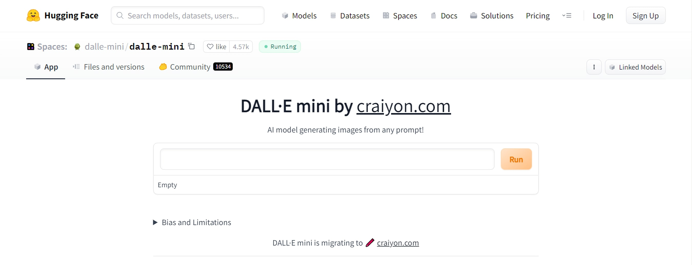
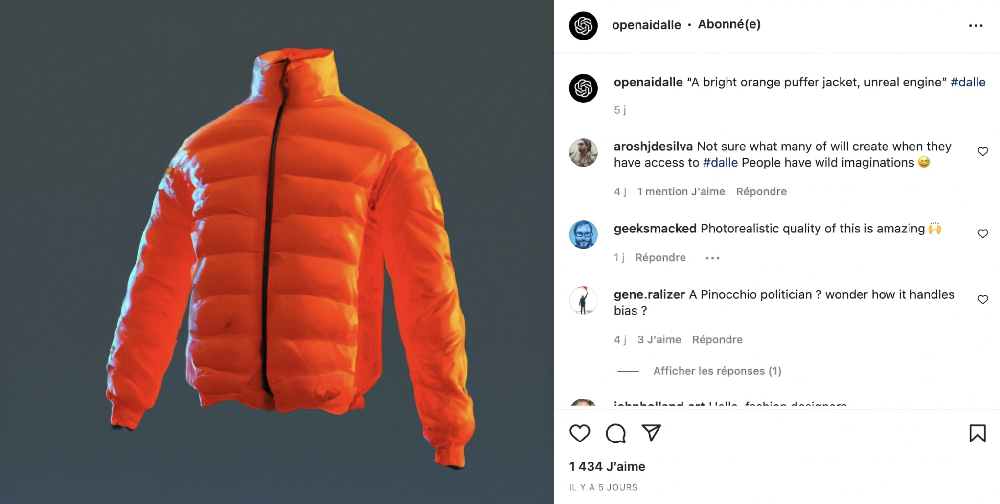
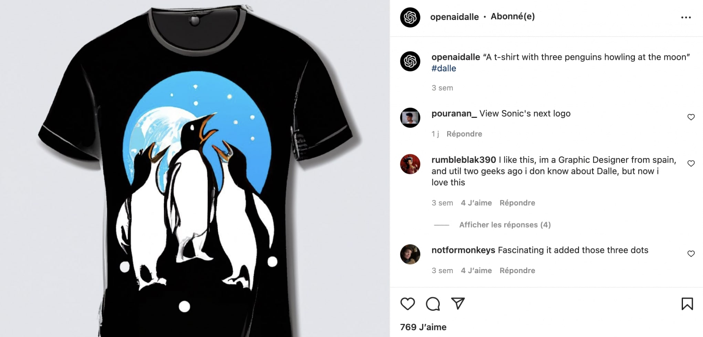

DALL-E : Generating Images from Text
DALL-E is an OpenAI deep learning model that is able to create images from simple text. The first version was presented in 2021, and just a few weeks ago, OpenAI presented DALL-E v2, an improved and even more bluffing (or scary?) version. In this article, I will explain to you how image generation works and will show some great examples too.
- Presentation of the DALL-E model through examples -
The DALL-E model is a variant of GPT-3 that has 12 billion parameters, and which was trained using a dataset of over 250 million image/text pairs (so don't try to train the same model at home 😂). With this project, OpenAI shows again that it has become the worldwide reference in language processing. This achievement was made possible thanks to GPT-3 and its ability to understand sentences with great accuracy. And it's good to know that DALL-E v1 was already impressive, here is some of his art:


You can find more examples from the v2 on DALL-E's instagram account.
- How to test DALL-E? -
OpenAI offers only limited access to the general public (50 images per free account). In the meantime, HuggingFace has proposed a DALL-E mini version that allows you to do the same thing, with less quality, but it's still bluffing!
- What are the main applications of this technology? -
The potential applications of this project are infinite, they go from artistic content creation, to e-commerce design.
+ Generate images for articles
If you're a blogger, you can ask DALL-E for free copyright images. This application could raise a lot of ethical questions, especially in relation to fake news. I'll address that issue in the last part of this article.
+ Finding ideas for Fashion and Design
DALL-E is very good at mixing concepts, like the example of "the avocado and the chair" from part 1. That creativity could be reused by designers to create new pieces of art. Here's what it could look like:
 + DALL-E v2 for e-commerce
DALL-E v2 is capable of quickly modifying an image. So in fashion for example, we could generate a photo of a model and make her wear different pieces of clothes in no time.
+ Checking the robustness of an NLP model
Moreover, an interesting application of DALL-E is that it can be used to check whether or not a Natural Language Processing model understands the sentences it is given. And this is brilliant as it would avoid big confusions. In the medical field, for example, we could test the understanding level of a translation model by making it generate images.
- DALL-E limitations and ethics -
DALL-E is strong! Very strong! And with great power comes great responsibility. As I mentioned earlier, the main threat of this technology is the possibility of feeding fake news by ill-intentioned people. On the other hand, these models could put a lot of people out of work. I often say that the main danger of AIs is not the fact that they will replace humans, but in this case, I think the concern is real. For example, the business model of photographers/artists will have to be rethought. These ethical limits have pushed OpenAI to limit access to DALL-E. Moreover, they have also set up a moderation system for the use of the model, to avoid the generation of pornographic, religious or political content. Finally, you should know that the robustness of these models depends heavily on the size of the training dataset and the number of parameters of the neural network. This raises issues for the environment on the one hand, and on the other hand highlights the total control and monopoly exerted by companies, or organizations, like Google and OpenAI. No small company would ever have been able to design such a robust model, nobody outside a handful of players has the means to do so.